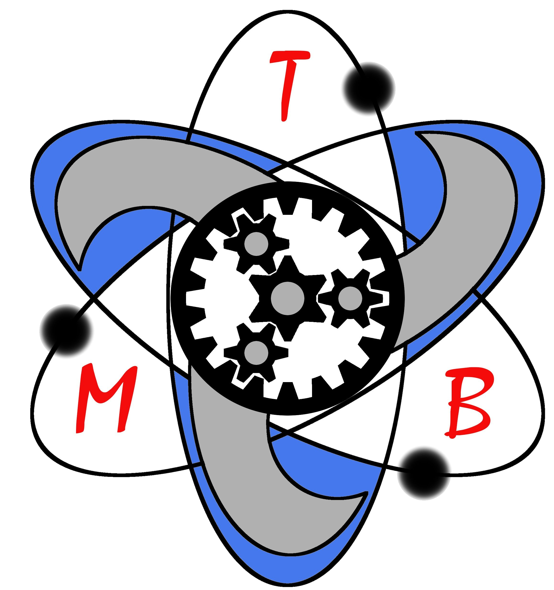

Du fühlst dich überfordert vom Lernstoff und dem Prüfungsdruck?
Du weißt nicht, wie du dich gezielt vorbereiten sollst?
◠Keine Sorge – genau dafür bin ich da.
Ich unterstütze dich dabei, dich optimal auf deine NTG- und HQ-Prüfungen vorzubereiten – mit System, Erfahrung und viel Geduld.
Viele fragen mich, wann und wie man Unterricht bei mir buchen kann.
Die ehrliche Antwort: Ich bin fast immer ausgebucht – vor allem, weil ich unter der Woche an meiner Doktorarbeit schreibe.
Das Telefon-Coaching ist kein klassischer Unterricht, sondern ein persönlicher Begleiter für deinen Lernprozess. Ideal, um fokussiert zu bleiben – mit System, Klarheit und menschlichem Austausch.
Ich bin Marius Bauer, 31 Jahre alt, habe Physik, Maschinenbau und Energietechnik in 18 Semestern mit Bestnoten studiert und promoviere aktuell im Bereich Wasserstofftechnologien.
Ich unterrichte seit 15 Jahren und habe in den letzten drei Jahren über 80 Industriemeister erfolgreich vorbereitet (Metall, Elektro, Logistik).
In meinem Logo stecken die drei großen Grundsäulen meiner akademischen Ausbildung
Das Zentrum meines Logos zeigt ein großes Zahnrad, welches in drei Kleinere greift, diese wiederum übertragen ihre Kraft auf ein Hohlrad. Der Zusammenschluss dieser Zahnräder in der hier dargestellten Konfiguration ist ein Planetenradgetriebe, welches repräsentativ für mein Maschinenbau steht. An der Hochschule für Technik und Wirtschaft Aalen erlangte ich den dafür zugehörigen Titel Bachelor of Engineering.
Auf bestimmten Trajektorien kreisen Elektronen um das Planetenradgetriebe. Diese Atomhülle symbolisiert mein Studium der Physik, welches ich nach 5 Semestern an der Friedrich-Alexander-Universität Erlangen-Nürnberg mit dem Titel Bachelor of Science abschloss.
Innerhalb der Atomhülle und angeschlossen an das Planetenradgetriebe befinden sich 3 Schaufeln, welche eine Turbomaschine darstellen, die ein blaues Fluid befördert. Diese Turbomaschine steht für den Studiengang Energietechnik mit Schwerpunkt Verfahrenstechnik. Ebenfalls an der FAU Erlangen-Nürnberg schloss ich diesen Studiengang im Jahre 2021 mit sehr guten Leistungen und dem Titel Master of Science ab.
Aktuell promoviere ich im Fachbereich Chemie- und Bioingenieurwesen. Hier forsche ich im Bereich von Wasserstofftechnologien.
Hier kannst du direkt einen Termin buchen:
Samstag & Sonntag, 7:30 – 9:00 Uhr
Fragen? Schreib mir: info@TalentMB.de